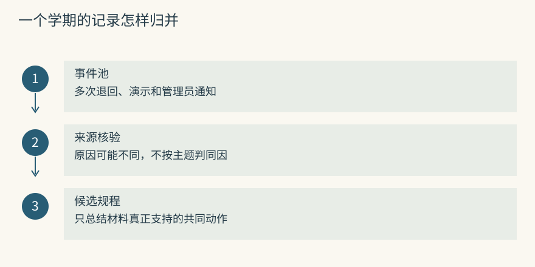
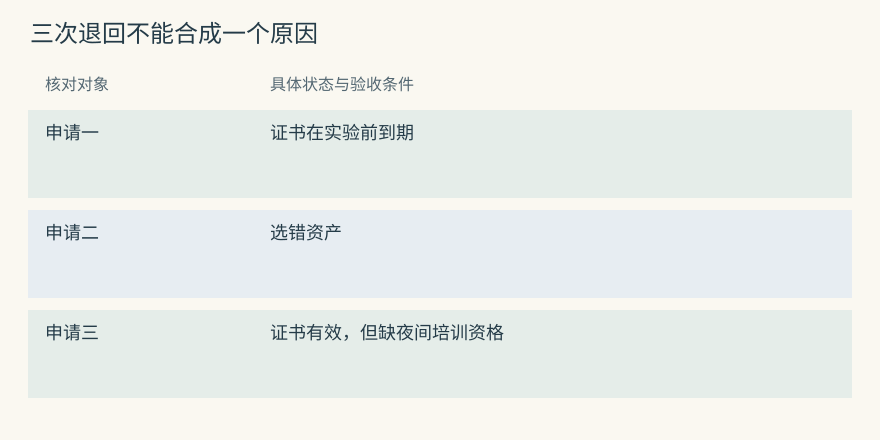
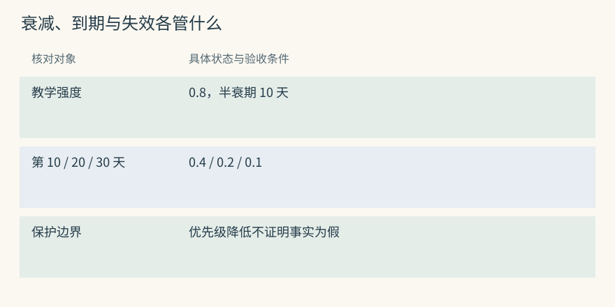
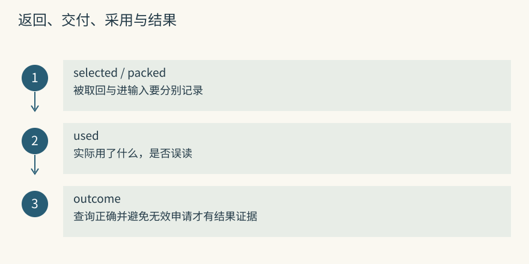
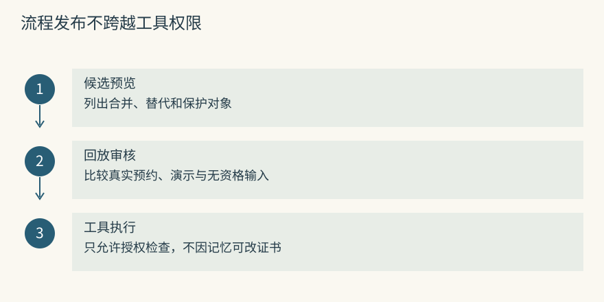
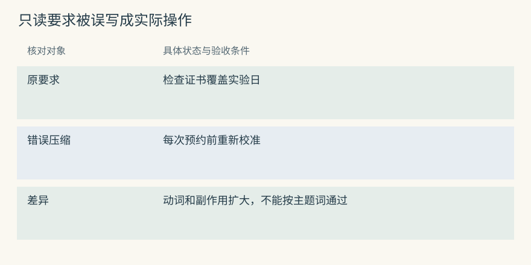
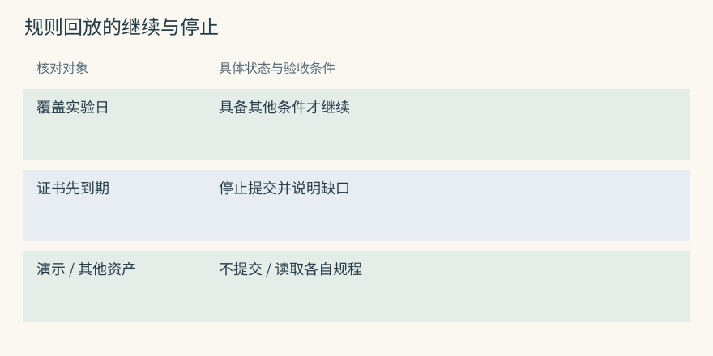
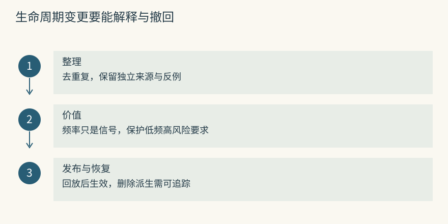

巩固、遗忘与自我改进
一学期的预约记录怎样避免重复堆积
仪器室一个学期办理了几十次 S7 申请。资料里出现多份证书日期退回记录、管理员反复强调的要求、演示截图和临时问答。每次预约都读这些材料，会重复支付输入成本，也可能让真正不同的例外埋在同义文字里。
可以从多次经历形成一条有来源的候选规程，例如“提交 S7 预约前，核对证书覆盖实验日期”。巩固负责组织和压缩，仍要检查各次经历是否真的支持这项规律。三份退回报告可能分别来自日期、资格和资产号问题，不能因为都叫预约失败就合成同一根因。
遗忘则调节记录未来的影响：降权、退出当前结果、归档或清除，动作不同。用户要求删除私人预约时，应检查实际正文和派生副本；将排序变低不算删除。公开规程、个人行程和临时演示也不应共用一条自动清理规则。
Mem0 可能积累多张同义卡，应用需要外层治理；Graphiti 可以在识别重复关系时汇聚来源，但各次事件仍存在。来源数量变多也不必然代表独立验证，转发一份旧通知十次依然可能只有一个观察。
源码与边界（选读）

先数原始观察，再看重复表达。教学资料中四份群消息都来自通知 notice-31，另一份来自独立证书工具报告。合并时保留这两类来源差别，不应把五份文字计成五次成功验证。
Mem0：ADD-only 会把长期治理责任留给外层
普通新增路径没有定期 sleep 式的高层巩固器。hash 对完全相同文本有帮助，同义要求仍可能不断追加。应用可以受限召回同资产记录，生成或人审候选摘要，再显式保存和维护来源。
压缩前保留事件与支持 ID，明确摘要替代的是展示冗余，不是抹去过去差异。若只 update 一张卡为总括要求，却丢掉原事件，后续无法判断某次退回是否真的属于校准问题。
Graphiti：重复关系可以汇聚来源，图仍会增长
重复解析可复用旧边并增加支持 episode，独立事件仍需要保存。节点 summary 提供简短概览，却不是所有历史的统一保留政策。少量重复边减少，也不代表节点、来源和无用关系不再增长。
长期运行应检查别名碎片、重复职责和旧关系对搜索的干扰。若来源都依赖同一原通知，不能以 episodes 长度作为证据强度或成功次数。来源依赖与图去重是两项不同治理。
一条教训是怎样被巩固出来的
拿三次申请作教学回放：申请一的证书在实验前到期；申请二选错了资产；申请三证书覆盖当天但未满足夜间培训要求。聚类可以把它们归为预约退回，巩固不能据此认定三次都由证书造成。
先比较材料支持的共同动作，再生成候选要求。三次可能支持“提交前核对资产、资格和证书”，但每一步的依据、适用范围和工具都要写清。若只要巩固证书要求，则只引用申请一及相应正式规程，其余事件不能充当支持证据。
Memobase 合并画像，MemoryOS 提升热页面，Hippo sleep 与 MCP 巩固可做集中整理，A-MEM 改写描述和链接。它们改变的对象不同，“巩固完成”可能只表示属性更新或描述变化，不意味着流程已经通过行为验证。Cognee improve 的知识更新也不等于训练基础模型。
源码与边界（选读）

审核候选时可以逐条画来源支持线。找不到材料支持的步骤应作为建议单列，不能混入已验证规程。生成文字、批准规程和授权执行应有各自状态。
Mem0：过程摘要可以生成候选，不能替审核
带 agent 范围的 procedural_memory 使用 _create_procedural_memory() 总结轨迹，清理围栏后将文本向量化并保存。它可以为预约流程提供草稿，却不自动重放三种退回或核验工具副作用。
应用应补充实际输入、停止条件、重复结果和人工批准。一次成功查询空闲时段不能支持“自动提交所有预约”，也不能因为摘要结构漂亮就跳过反例测试。
Graphiti：实体摘要是局部视图，不是通用流程学习
新增关系参与节点属性和 summary 更新，S7 概览可能提到预约风险。若需要稳定规程，可以另建流程和约束关系，并保留支持材料。节点摘要本身没有检查照它执行是否安全。
将“常见退回原因”摘要直接作为执行步骤，会混淆描述与规范。例如“证书过期曾导致退回”描述过去，不支持“每次预约都重新校准”。规程应回到原文和可信业务要求核对。
用半衰期理解优先级下降
教学模型设某条临时排障经验初始强度 0.8，半衰期 10 天，其他因素不变。10 天后为 0.4，20 天后为 0.2，30 天后为 0.1。公式为 strength=initial*0.5^(elapsed/half_life)，它管理优先级或保留价值，不是事实真实性。
一条陈旧但仍适用的紧急停机规程，不应仅因低频就被删除。相反，刚写入的错误猜测即便强度很高也需要纠正。热度、时间、证据和风险可以共同影响保留，但字段语义要分开。
Hippo 的半衰期机制与 MCP 的 exp(-age/retention_period) 参数也不能直接互换。若后者时间常数设 10 天，第 10 天纯指数项约为 0.368，而非 0.5。迁移参数时应换算公式，不是只复制单位为天的数字。
Mem0 到期隐藏是阈值切换，Graphiti 关系结束表示事实不再成立，都不等于连续价值衰减。访问少可以降权，但不应直接写成关系现实失效。
源码与边界（选读）

图将三项信号分开：临时经验的强度缓慢下降，活动提醒到期后不再默认展示，旧复核关系在交接日结束。它们需要不同测试，不能用同一个“忘记时间”字段兼任。
Mem0：expiration_date 是阈值，不是半衰期
到期后的默认隐藏不会逐日把相关分乘 0.5。把 half_life_days 放入 metadata 也不会自动改变 score_and_rank()。若业务需要价值衰减，应在外层明确评分或归档任务。
保护项、事实可信度和业务价值要分别维护。临时提醒可短期保留，证书规程可按版本长期适用，而不由最近查询日期直接决定其有效性。
Graphiti：invalid_at 表达事实失效，不表达热度下降
周岚职责结束需要现实交接来源，不能因为三个月没查就写 invalid_at。正确但低频的规则仍可能适用当前任务。
若要按使用信号降低搜索优先级，可以保存独立热度或价值字段，并记录更新依据。这样历史关系仍能按有效时间解释，排序也能单独调整，避免将“少用”伪装成“现实不再成立”。
取过一次，与帮上一次忙的区别
一次查询返回证书要求，后续可能发生四种事：没装入输入；装入但模型未用；用了却误读成重新校准；正确查询证书并避免无效申请。只有最后一种有机会支持正向结果反馈，其他情况各有不同问题。
可以分别保存 selected、packed、used、outcome，关联同一请求和记录版本。Hippo 的 outcome 入口与召回强化并非同一信号，MemoryOS 的热度主要服务后续分析，也不能当作真实性证明。一次失败还需要区分内容错误与根本未读取。
若搜索每次误召回同一猜测，又每次命中都增加寿命，这条错误会越来越难退出。用户纠正时要显式修正或替代内容，不能只给一个负分却让旧断言继续参与当前答案。价值管理不能替代事实治理。
源码与边界（选读）

教学请求 R9 返回五条、装入两条、实际用了证书要求一条，最后申请通过。不能把五条都计成成功经验。若申请通过来自人工纠正资产号，还要审慎判断证书要求的贡献。
Mem0：搜索分数与任务 outcome 分开记录
普通搜索结果提供相关信号，没有自动把预约办理结果归因给每条事实的完整闭环。宿主需要关联 request ID、返回 ID、注入 ID、工具动作和最终业务结果。
确认使用后，才有依据更新外层价值。即使如此，内容正确与本次有用也不同：一条正确证书要求在纯页面演示里没有帮助，不因此变成错误，也不应因为出现过就被奖励。
Graphiti：episode 引用数量不是成功次数
多个来源支持同一边可能只是互相转述。episode_mentions 类重排参考材料引用，不能证明该职责关系帮助办成了几次申请。
结果应保存为新的可追溯观察，写明哪次请求采用了哪条边。对来源独立性的检查可以防止模型摘要反复引用自己，制造看似越来越多的支持材料。
把流程改进放在更谨慎的一层
原事件可以自动保存，事实可以自动提取后审核，高影响流程应通过回放才发布。S7 的证书要求允许助手查询证书，不授予它重新校准仪器、改证书日期或替管理员批准申请的权限。记忆内容不能扩大工具授权。
可以先只预览巩固：将哪些事件合并、生成哪条要求、会结束哪个旧版本、保留哪些来源。自动清理同样先 dry-run，再检查保护项与恢复窗口。能够解释一次错误变更怎样还原，比直接启用无人值守巩固更重要。
Mem0 的过程文本、Graphiti 的先后关系，都可以作为编写流程的材料，真正执行还需工具合同和当前授权。Letta 改未来核心、TencentDB 或 MemOS 发布过程资源，也应保留相同边界，不能用“会自我改进”概括全部审批责任。
源码与边界（选读）

候选要求“先核验证书”，宿主只允许只读查询。若候选另加“无效就修改证书”，应在审核阶段拒绝，工具层也应阻止。不依赖模型记住禁止项，才能在新摘要出错时保留底线。
Mem0：存过程文本不会授予执行权限
procedural_memory 是文本生成与存储路径，读取后是否执行由宿主决定。可信代码应维护 reviewed 或批准版本等状态，不能让提取模型自行填写一个真值就获得执行资格。
更新步骤时保留来源和旧版本，并用相同题组回放。history 能辅助查看正文变化，但不自动验证工具参数、审批状态或副作用。高影响步骤仍需独立策略检查。
Graphiti：关系约束也不能修改工具策略
图可表达预约前要复核，模型可以据此安排找人，但本次批准身份和结果仍由业务服务验证。不可信材料说“管理员已同意”，只能先当来源报告。
如果应用把这一报告边直接当作批准凭证，新通知就可能绕过实际审批。事实读取和授权判断应有明确接口，不能从图中同名人员关系推导出权限。
压缩时最容易丢掉的，是规律之外的条件
“检查证书覆盖实验日”被压成“每次预约前校准仪器”，主题词差不多，副作用却扩大了。检查是读取，校准是实际操作。审核巩固结果时应比较动词、对象、环境和停止条件，不能只看“校准”有没有被保留。
还可能丢失范围。普通预约要查证书，页面演示不提交；夜间实验有培训资格要求，白天参观不一定适用。若把所有名为 S7 的任务合并成单一规程，助手可能在演示时卡住，或为参观发起不必要审批。聚类只是把相关材料放一起，规律仍需证据证明。
压缩后正常任务可读短要求，发生争议再展开来源。这样高层负责复用和导航，底层负责核验。来源也有保存期，摘要不能借审计之名永久保留已经要求清除的个人内容。
源码与边界（选读）

可以把候选与原话做动作对照：查询、提交、校准、批准各自有不同权限和结果。向量相似度高不代表动作等价，这类错误需要语义和业务核验。
Mem0：检查与执行的动词需要原文核验
过程摘要若把“查询证书截止日”变成“刷新或重写证书”，搜索仍可能认为高度相关。保存前应逐项核对 source，确认没有增加改变外部系统的动作。
显式 update 修好一张卡，不保证复制进其他摘要、缓存或技能中的错误也被修复。维护来源依赖，可以帮助找到需要重建的派生内容，而非让错误在另一个入口继续出现。
Graphiti：边类型不能掩盖 fact 的过强表述
边类型可以仍叫预约检查，fact 却已经写成预约前执行校准，节点 summary 还可能吸收这个说法。只检查 relation 名称会漏掉正文中的动作升级。
核验应覆盖 relation、fact、限定属性、端点与来源。纠正时重新检查摘要和关联派生项。若高层不可重建，错误范围就难以完整收回。
用反例检查一条改进是否真的有用
证书规程至少可以回放四题：证书覆盖实验日应继续；证书先到期应停止提交；纯页面演示不应提交；另一台仪器应使用自己的规程。若新规则四题全拒绝，退回次数可能下降，但它只是取消了任务完成能力。
遗忘同样需要反例。一条低频紧急停机要求可能半年未读，却在事故时不可缺少。可以从常规结果降权或归档，同时保留明确应急入口，而不按访问次数直接删除。保留价值既涉及使用频率，也涉及遗漏损失。
结果归因也要限制。一份申请通过，可能因为当前工具发现并纠正资产号，与输入里其他记忆无关。可以先积累结果而不自动延长所有寿命，再依据明确使用行为、人工反馈或可解释对照决定调整力度。
源码与边界（选读）

固定初始资料和工具返回，才有公平的规则比较。测试运行产生的新事实和关系不应污染另一个版本，否则后一次可能因为多读了资料而获益，而非规则本身改善。
Mem0：对照库不要继承测试产生的改写
可建立一个直接保存审核事实的基线库，另建启用过程总结或外层巩固的实验库。两边固定 query、reader、工具与输入额度，分别测试正式预约、演示和无关资产。
测试期间的新增或 update 只在各自环境生效，每轮从明确初始状态开始。不要把实验组纠正后的卡复制给基线，再声称两者最初知识相同。
Graphiti：分别消融摘要、解析和关系扩展
先核对固定材料下的实体和区间，再分别关闭摘要、关系扩展或不同解析策略，测量收益。否则错误端点会同时污染所有检索分支，最终分数无法解释。
反例还要检查纠正后旧边是否退出当前视图，演示例外是否误伤长期默认，摘要是否继续引用旧结论。节点减少多少只是压缩规模，不是可靠性指标。
动手检查
四项资料是：已验证的证书规程、本周演示安排、未证实的缓存根因、禁止上传账户凭据的宿主策略。请分别写出过期、降权、纠正和保护方式。如果演示记录已归档，用户要求删除时是否还需清理？
答案提示：类型和风险决定策略，安全授权不应依赖记忆热度。归档仍保存实际内容，隐私清理要继续覆盖它、摘要、向量、日志和备份政策中允许保留的副本。
实现笔记与源码对照（选读）
保存一切会让记忆退化
资料池增长会改变问题难度。预先给一个问题限定几十个会话，与把多年预约、聊天、演示和工具报告混在全局池里搜索，候选竞争完全不同。长期检索评测如 LongMemEval 的固定材料设定，不能替代真实增长池的治理测试。
可以逐月增加无关但词面接近的资料，观察必要规则的入池率、最终交付率与任务成功。如果质量下降来自重复和过期项，继续增加向量维度未必有用；需要检查写入筛选和生命周期。
生命周期状态机
生命周期可以用几个独立状态表示，避免一个分数包办全部语义：
原事件：received → processed，或 failed_waiting_retry
证据：reported → verified，或 corrected/retracted
当前性：active → superseded/stale
保留：online → archived → erased同一记录可以已验证但被替代，也可以仍当前但仅为来源报告。状态转移要有依据和审计，不能因命中搜索就从 reported 自动跳到 verified。删除状态还要对应实际清理动作，而非只改标签。
巩固
巩固可以减少重复展示、合并稳定属性，或从轨迹提炼规程。输入应是有明确范围和来源的事件，输出应是可以回放的候选。多次同义转述不提供新的独立观察，三种不同退回也不证明同一根因。
高层规程保留支持 ID，普通任务读短版，争议再展开。若源事件被纠正，派生项应可重新计算或暂停使用。不可追溯的总结会让后续纠错只能再生成一段总结，逐步增加漂移。
遗忘
Hippo 将指数衰减、召回强化、outcome 和 sleep 等信号结合管理寿命。其资料也保留了部分未复现或撤回的早期学习结果，说明单个演示成绩不足以支持长期收益。应用应使用自己的固定任务和增长池验证，而不把所有反馈增强视作必然有效。
教学价值式可写成 importance*confidence*0.5^(idle_days/half_life)，再加保护条件。它只是管理价值的一种近似，不能把低值等同于错误。pinned、应急或受法规约束的内容需要单独政策，先预览再应用，并保留恢复窗口。
巩固在各项目中的动作不同
MemoryOS 从短期问答形成 page 和主题 session，热度触发未分析页面的长期画像与知识分析，中期还有容量与 LFU 淘汰。它主要改变驻留层和组织，不是简单每天删最旧内容。Memobase flush 整合 profile/event，TencentDB 从 L0 产生层级内容和技能，并记录生成信息，二者要防一次例外被提升成稳定属性。
A-MEM 修改 links 和邻居描述，Graphiti 更新边的有效性与节点摘要，Cognee improve 按配置处理知识和反馈。它们不都减少条数，更不都更新模型权重。验收应检查具体改动与原文的一致性。
Hippo sleep 与 MCP consolidation 可以组合重复处理、聚类、压缩和遗忘，阶段、限额与恢复都应读实际报告。Letta 改文件后影响后续编译，MemOS 调度选定模块。Beacon 供证据，Hermes 判别候选，都不应被算作已经完成长期巩固。具体路径见 原生记忆、事实画像、图谱、分层系统 和 接入。
用一个长期实验检查遗忘
建立四类固定记录：预约规程、演示限制、错误猜测和安全保护项。推进模拟时钟，分别制造“被选中但未交付”“交付但没采用”“确实避免退回”“误导动作”四种反馈，观察状态和寿命。模拟时间不是远程运行多月，结果应明确标为本地规则实验。
检查所谓忘记到底是降权、失效、归档还是物理清除。Mem0 的过期卡、Graphiti 的旧关系、Basic/Letta 的文件历史及云备份可能继续含正文。生命周期治理和用户删除要分别制定验收，不能用前者代替后者。
反馈闭环
每次请求可以保留返回 ID、实际装入 ID、采用证据版本、工具动作、业务结果、用户纠正和成本。延迟、token 和费用让收益有代价口径，结果与使用信号则防止误强化背景资料。
Hippo 的显式 outcome、Cognee improve 和 MemOS 反馈提供不同更新入口。接入方应先决定反馈改变排名、寿命、派生内容还是流程，再为该动作建立可靠证据。不要因为整次任务成功，就给输入里每条记录统一加分。
自我改进的安全边界
可以按影响程度逐级增加自动化：原事件自动接收，事实候选带证据类别，规律经过阈值与反例核验，过程和核心规则经评测或人工批准发布。安全、身份和工具策略留在宿主可信层，不能由任何一条新记忆覆盖。
每次 promotion 留下来源、版本和理由，提供暂停与恢复入口。这样能解释某条预约要求为何影响今天，而不是只说助手“学会了”。证据不充分时保留待审候选，比过早改变未来所有任务更稳妥。
指数衰减的参数不能直接互换
Hippo 的纯项为 0.5^(elapsed/effective_half_life)，outcome 等可影响寿命或读取价值。MCP 的 衰减模块 使用 exp(-age/retention_period)，再乘重要性、连接、访问和 quality 等因素，并为保护项设下限。
Retention period 是时间常数 τ，半衰时间为 τ*ln(2)。若想让 MCP 纯项在第 10 天减半，需要 τ 约 14.43 天，而不是 10。若质量只乘总分，没有改指数中的 τ，不能把它描述成数学上改变了衰减速率。连接和访问也可能强化错误，仍需真实性审查。
受控遗忘 根据质量、闲置和保护规则挑候选，结果可能 archived、compressed、deleted 或 skipped。完成后要读具体 action，不能将所有 forgetting 都当成永久删除。Hippo sleep 也应核对合并和清理后来源链是否完整。
用反馈改变什么：排名、派生内容还是规则
Cognee 的 改进阶段 按能力和配置 gate 处理反馈权重、会话 QA 和 trace 等，用 watermark 避免重复。QA 持久化失败属于防丢数据的严重阶段，其他阶段有各自状态与跳过理由。一次 improve 返回不表示全部学习动作都执行了。
Hippo outcome 可影响寿命和读取排名，MemoryOS heat 触发长期分析，A-MEM 变更邻居描述，Letta 修订未来核心，TencentDB/MemOS 的技能提升改变过程资产。分别开关这些通道，才能知道收益来自排序、更多背景，还是新增流程。
Mem0 追加保存不等于自动巩固，Basic 的人工合并仍需审查，Beacon 采集与 Hermes 选择不应直接算知识成长。每次更新应明确实际状态和可恢复路径，尤其不能让“已经学习”掩盖删除和纠错仍未完成。

项目对照速查（选读）
本章对照结论
| 项目 | 演化实际改动 | 本章的风险检查 |
|---|---|---|
| Hippo | 强度、寿命、排序与集中合并 | 结果归因、保护项和误强化 |
| MCP Service | 聚类、压缩、关系及保留动作 | 读取实际 action 与恢复 |
| MemoryOS | 页面、主题和长期层 | 热度不等于验证 |
| A-MEM | links、context、tags | 描述漂移与索引刷新 |
| Memobase | 画像和事件合并 | 例外泛化、原输入保留 |
| TencentDB | 层级内容、技能和资产状态 | 版本、来源和跨服务失败 |
| Graphiti | 摘要、重复边、有效区间 | 误失效和来源依赖 |
| Cognee | 按 gate 执行的反馈阶段 | 跳过不应当作已完成 |
| MemOS | 被调度的资源与技能内容 | 任务积压与模块差异 |
| Letta Code | 后续提示使用的文件版本 | 规则过宽与核心评测 |
| Basic Memory | 人或 Agent 的明确编辑 | 并发与历史副本 |
| Mem0 | 新事实和显式修改 | ADD 不自动清理旧状态 |
| Agent Beacon | 持续动作记录 | 采集还不是规律 |
| Hermes Jev Skills | 本次选择及 TTL 小缓存 | 判别不改变长期事实正文 |
| HippoRAG | 增量索引与来源结构 | 知识增长不等于寿命治理 |